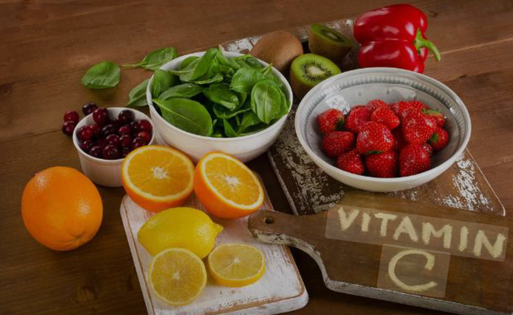
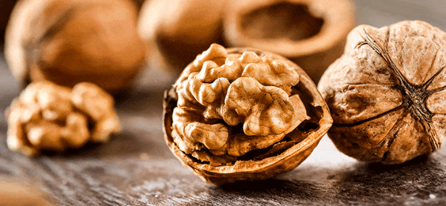
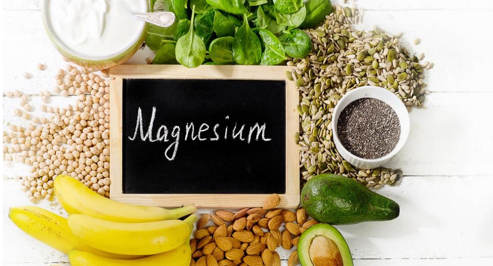
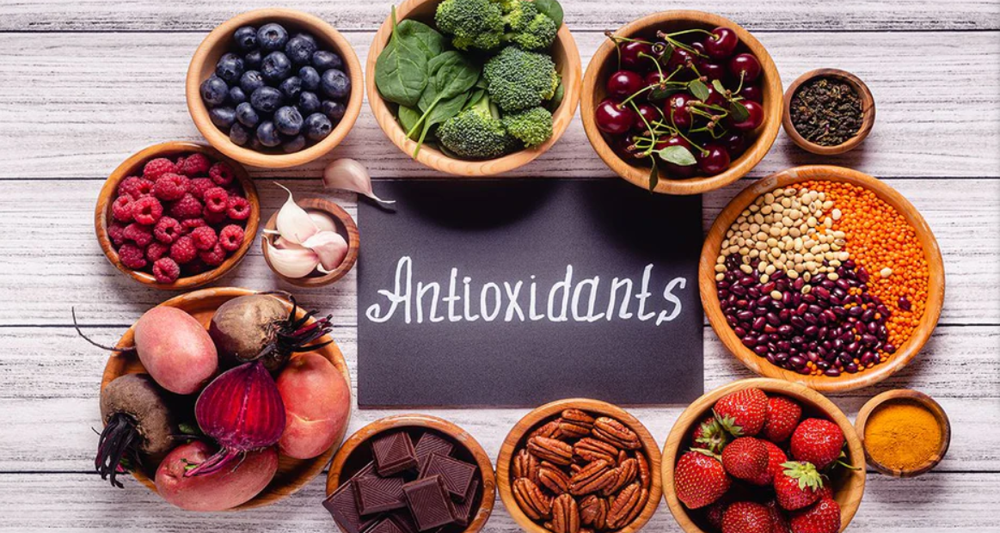
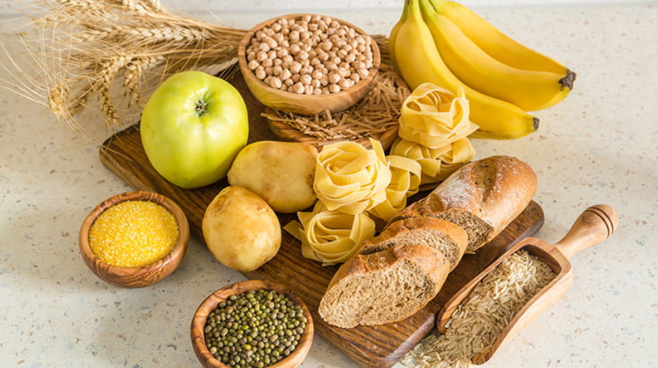
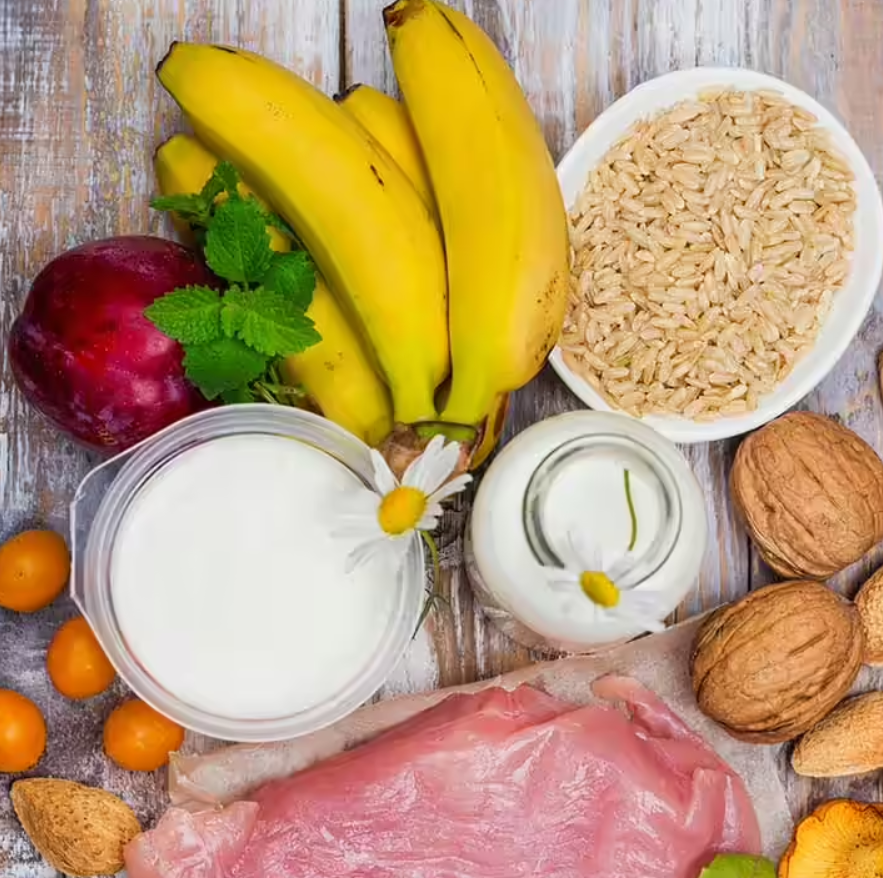
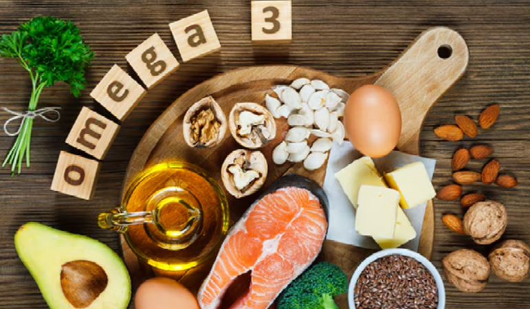

Welcome to the Food for Mood section of CalmSutra! Here, we explore the connection between food and emotional
well-being. Discover how certain foods can uplift your mood, reduce stress and promote a sense of calm.
We suffer from Stress, Depression, Anxiety, Anger, Frustration and more. But there are certain foods can help
alleviate these feelings. Here are some foods that can help boost your mood:
1. For Stress
Foods rich in Vitamin C, such as oranges and strawberries, can help reduce stress levels.

2. For Depression
Omega-3 fatty acids found in fatty fish like salmon and walnuts can help combat depression.

3. For Anxiety
Foods high in magnesium, like spinach and almonds, can help reduce anxiety.

4. For Anger
Foods rich in antioxidants, such as blueberries and dark chocolate, can help calm anger.

5. For Frustration
Complex carbohydrates like whole grains such as oats and brown rice can help stabilize blood
sugar levels and
reduce frustration.

6. For Bad Mood
Foods rich in tryptophan, such as turkey and bananas, can help improve your mood.

7. For Overthinking
Foods high in omega-3 fatty acids, like flaxseeds and chia seeds, can help reduce
overthinking.

8. For Tension
Herbal teas like chamomile and peppermint can help relax your mind and reduce tension.